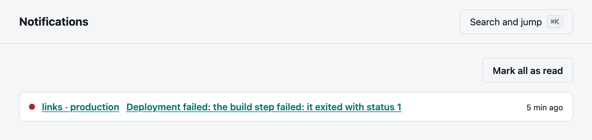
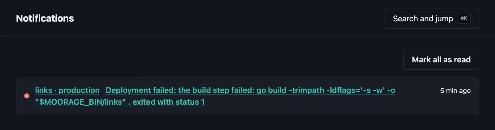
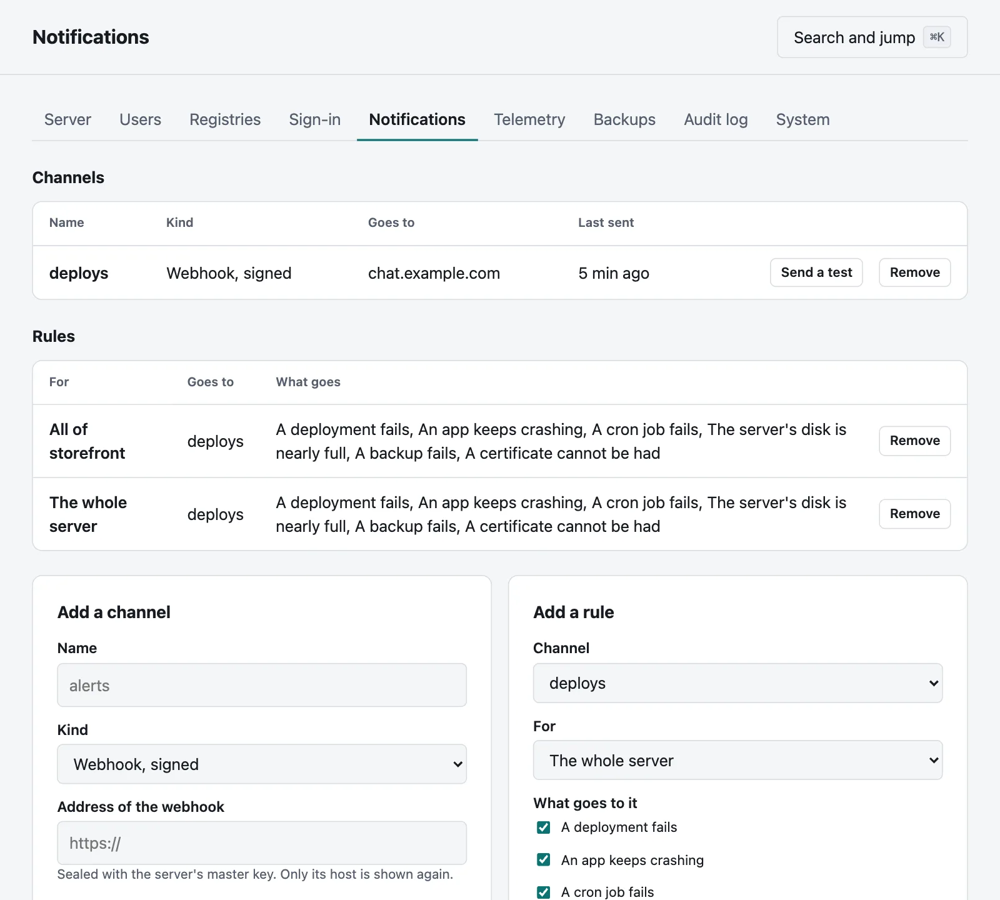
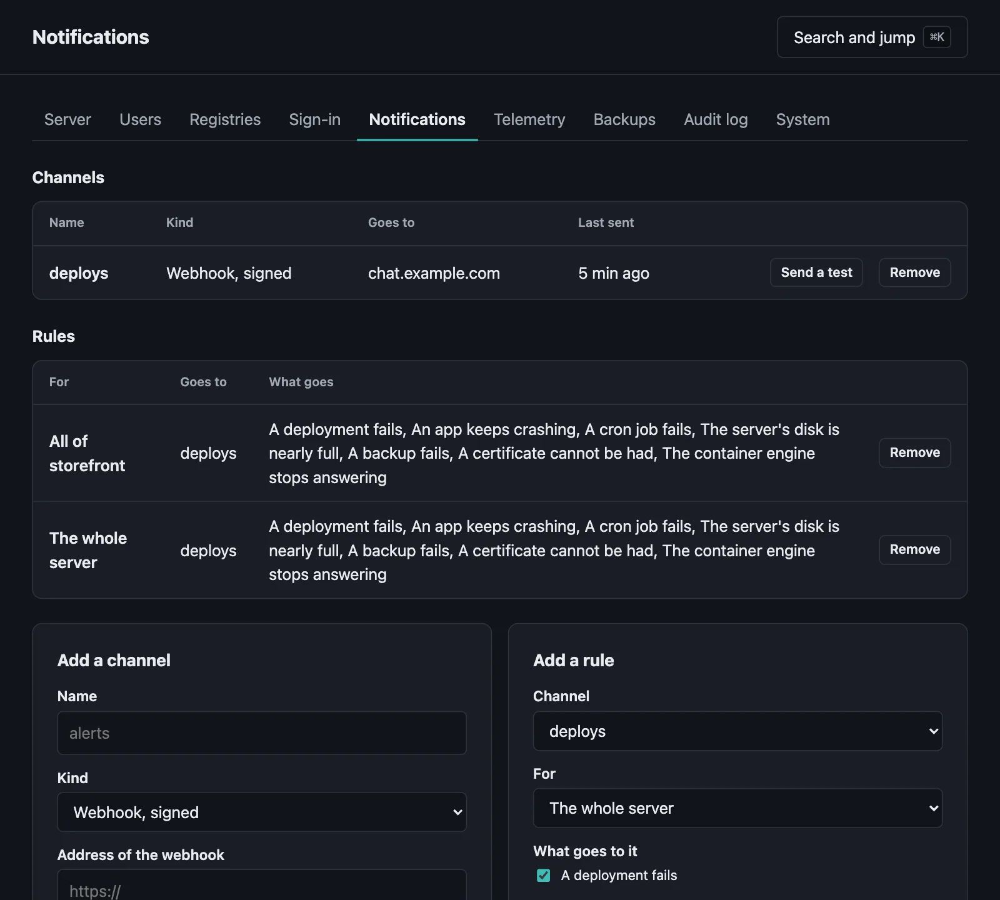

Notifications
Told when something goes wrong: in the console, by webhook, in chat and by email.
On this page
Moorage says when something goes wrong: in the console for those it concerns, and through webhooks, chat and email for whatever you set up. An app that keeps crashing sends one message and not hundreds, and then a word when it has recovered.
In the console#
Notifications in the sidebar has what you have been told, and how many you have not read. Nothing has to be set up. You are told:


- when a deployment of yours fails, whatever your role;
- when a deployment fails, an app keeps crashing or a cron job fails in a project you maintain, which includes a project whose Everyone else is maintainers;
- when the server's data volume is 90% full, if you are an administrator. Administrators are told of everything else as well.
Notifications are kept for 90 days. From the command line:
moor notificationsmoor notifications --readThe server's local administrator, which is who moor is on the server's own machine until you sign in, is not an account, and has nothing to read.
Channels#
A channel is somewhere word can go. Adding one takes an administrator, in Settings → Notifications or with moor notifications channels add.


| Kind | What it sends |
|---|---|
webhook | JSON, signed |
slack | A message, to an incoming webhook |
teams | A message, to an incoming webhook |
discord | A message, to a webhook |
email | A message, through your mail server |
moor notifications channels add alerts --kind slackThat asks for the address of the webhook, since a chat webhook's address is a secret: --url gives it on the command line instead. Email has no address to ask for:
moor notifications channels add on-call --kind email --host smtp.example.com --username moorage --from moorage@example.com --to ops@example.com,oncall@example.comThat asks for the mail server's password, because --username says to sign in. Mail goes to port 587 unless --port says otherwise, using STARTTLS if the server offers it. Port 465 has TLS from the start. A password is only sent over TLS.
All of what a channel needs is sealed with the server's master key. Afterwards only the webhook's host, or the addresses mail goes to, can be seen, and only by administrators. Those who are not administrators see a channel's name and kind, to choose it for a rule.
See that one works:
moor notifications channels test alertsThe list says when each channel last sent something, and why the last attempt failed if it did:
moor notifications channelsRules#
Nothing goes to a channel until a rule says so. A rule is for the whole server, a project or an app. A rule of the whole server takes an administrator, and one of a project or an app takes a maintainer of it, who can add it on the project's page or from the command line:
moor notifications rules add --channel alerts --project webA rule says what it wants. Without --events it has the first five of these:
| Event | When |
|---|---|
deployment.failed | A deployment fails |
instance.crashloop | A process has exited three times in five minutes |
cron.failed | A cron job fails |
server.disk_low | The data volume is 90% full, which only a rule of the whole server hears |
backup.failed | A backup fails, which only a rule of the whole server hears |
instance.unhealthy | An instance fails its health check |
deployment.live | A deployment goes live |
* asks for all of them. A channel told that something went wrong is told when it has come right:
- a deployment goes live after one that failed;
- a process that kept crashing has not exited for 10 minutes, or a new release has replaced it;
- all the instances that were unhealthy are healthy, or a new release has replaced them;
- the data volume is below 85%;
- a backup works after one that failed.
moor notifications rules add --channel alerts --app shop --events deployment.failed,deployment.livemoor notifications rulesOne message, not hundreds#
What can happen over and over by itself is held back: after a message that a process keeps crashing, that an instance is unhealthy, that a cron job failed or that the disk is nearly full, others like it wait for 15 minutes, for the same environment and the same process or job. The next one after that says how many were held back. A word that it has recovered ends the wait, so that going wrong again is news at once, unless it keeps going back and forth, which is held back in the same way. In-console notifications go by the same rules.
Deployments are not held back: each one is there because someone asked for it, and they are to hear how it went.
A message that does not go is tried three times, ten and then twenty seconds apart. A message held up when the server stops is not sent afterwards. What happened is always in Activity, whatever became of the message.
What a webhook sends#
{
"type": "deployment.failed",
"app": "shop",
"env": "production",
"summary": "Deployment failed: the web process exited while starting (status 3)",
"link": "https://moorage.example.com/deployments/dep_01M6JXMSSPENTDEZ7YZMVT6235",
"at": "2026-11-04T09:18:36Z",
"suppressed": 0,
"data": { "deployment": "dep_01M6JXMSSPENTDEZ7YZMVT6235", "error": "..." }
}type is one of the events above, or recovered, whose data.recovered_from says what from, or test. suppressed is how many like it were held back since the last that went. Anything but an answer of 2xx counts as not having gone, and redirects are not followed.
Checking a webhook's signature#
Adding a webhook shows a secret, once. It signs each message, so that a receiver can tell that it came from your server, and came recently. The X-Moorage-Signature header has the time and an HMAC-SHA256, in hex, of the time, a dot and the body:
X-Moorage-Signature: t=1793783916,v1=9f86d081884c7d65...To check it, work out the same from the body as it arrived, before parsing it:
import hashlib, hmac, time
def is_genuine(secret: str, header: str, body: bytes) -> bool:
fields = dict(part.split("=", 1) for part in header.split(","))
signed = fields["t"].encode() + b"." + body
expected = hmac.new(secret.encode(), signed, hashlib.sha256).hexdigest()
recent = abs(time.time() - int(fields["t"])) < 300
return recent and hmac.compare_digest(expected, fields["v1"])X-Moorage-Event has the message's type.
What notifications may reach#
A channel's address could otherwise be used to reach what only the server can. So channels may not connect to this machine by any of its addresses, a link-local address or a cloud's metadata service, whatever name the address gives. Other addresses on your local network are allowed, since a team's own services are what many webhooks are for. Forges are held to the same. To allow more, name them in server.toml, and restart the server:
[notifications]
allow = ["127.0.0.1/32"]The server connects directly, and does not use HTTP_PROXY or the like.
See also#
- Metrics, for how an app is doing all the time
- Projects and roles, for who maintains what
- Cron jobs